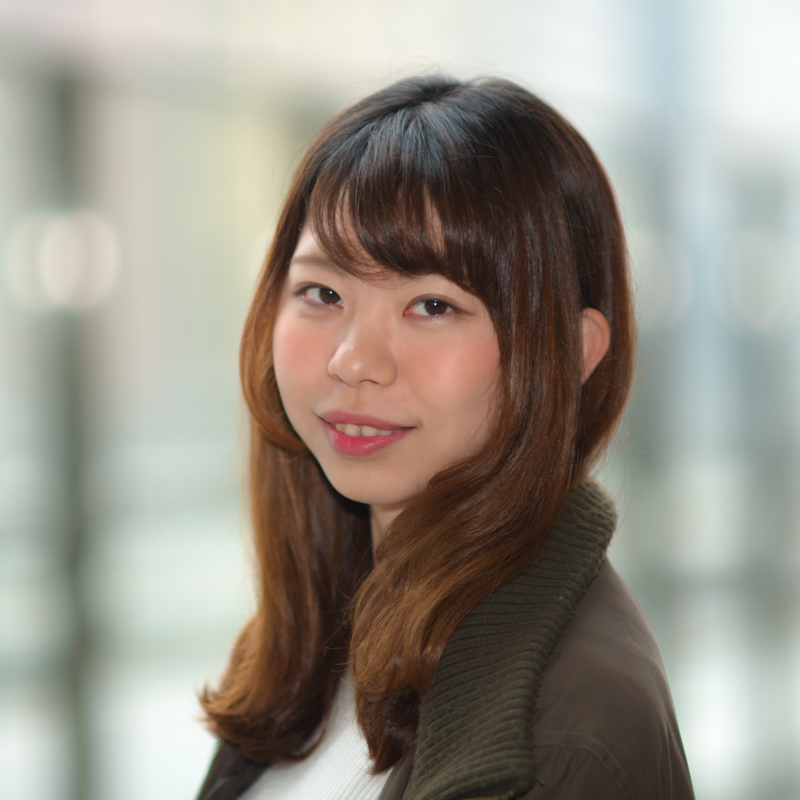

RECRUIT
新歓 PV
MCSとは
関西大学公認の映像ボランティアサークルです。正式名称である「Media Creative Supporter」を略して、MCSと呼ばれています。
詳しく見る ＞
MCSの活動
関西大学高槻キャンパス内で放送されるテレビ番組をはじめとした様々な番組制作の他、各種イベントの運営や、夏には長編映画の自主制作なども行います。
詳しく見る ＞
新入生へのメッセージ
MCS現リーダーから、新入生の皆さんへのメッセージをいただきました。
|  |
皆さん、初めまして！
私は今年度のMCS代表になりました3回生の谷上琴音（たにがみことね）です。 MCSとは、Media Creative Supporter（メディア・クリエイティブ・サポーター）の略称で、映像を中心とした様々なメディアを使って、関西大学総合情報学部を盛り上げよう！をコンセプトに活動している団体です。 そんなMCSは、今年で10周年を迎えました！ そこでMCSに興味のある新入生には、ぜひ今年起こる特別な瞬間を目の当たりにしてください！ もちろん、MCSに入らなくても総合情報学部を始め、色々なところで楽しめるようなイベントもしていくのでお楽しみに!! |
FAQ
Q.MCSとは?
A.関西大学公認の映像ボランティアサークルです。正式名称である「Media Creative Supporter」を略して、MCSと呼ばれています。MCSのことをもっと知りたい方はこちら。
Q.MCSってどんなところ?
A.テレビ局で用いられているような本格的機材を用いて、番組制作を行うことができる団体です。
Q.活動日、活動時間は?
A.主に金曜日に活動しています。昼休みに全体の集まりが、授業終わり(主に5限後)に各局の活動があります。
Q.MCSでは何が身につくの?
A.カメラや動画編集の技術、PhotoshopやIllustrator等の扱い、企画制作やマネジメント、マーケティング、広報活動等の技術を実体験を通じて学ぶことができます。
Q.ほかのサークルとの掛け持ちはできるの?
A.もちろんできます。MCSのメンバーの中には5つのサークルを掛け持ちしている人もいます。
新入生向けMCSスケジュール